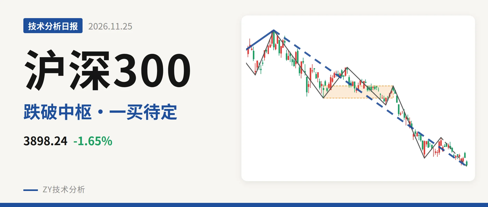
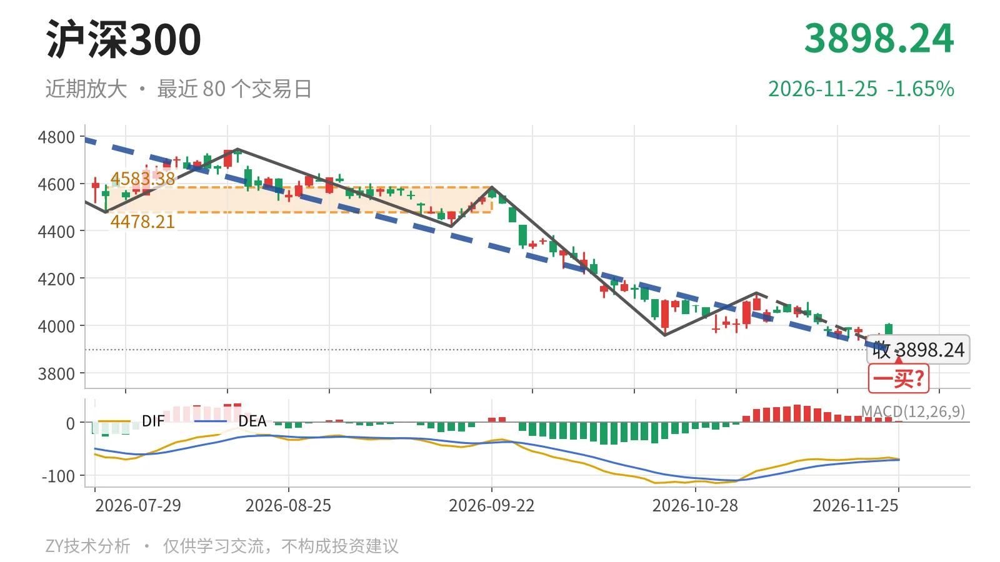

沪深300｜跌破4478中枢，3886点暂成一买

最近日线中枢 4478.21—4583.38点，收盘位于中枢之下
一句话：跌破日线中枢下沿，暂定一买出现但下跌笔仍延续。
📉 走势结构：下跌线段继续，更大级别上涨仍在回落
当前日线处在6月23日以来的下跌线段中，这一段还没有结束。更大级别由线段构成的最近三段里，2021年2月18日至2024年2月2日下跌段已经结束，2024年2月2日至2026年6月23日上涨段涨约63%后没有结束，6月23日以来的下跌段跌23.2%也在延续，因此当前先按上涨后的回落来理解。日线线段层面，3月24日至6月23日的上涨线段已经结束，6月23日以来的下跌线段已含7笔，低点至3886.92点，没有出现反向线段破坏。

🧭 中枢与位置：最近中枢下移，价格跌破下沿回旧中枢
最新收盘 3898.24点 低于最近日线笔中枢下沿 4478.21点 约13%，已经落回2024年10月8日至2025年5月30日日线笔中枢 3812.32—4200.91点 区间，距下沿约2.3%。最近两个日线笔中枢是下移的：2月3日至3月17日中枢4578.21—4720.86点，7月30日至9月22日中枢4478.21—4583.38点还没完成。价格跌破后者下沿后，短线结构回到3812—4201点旧平台内。
🔍 买卖点：旧卖点只对应日线笔，当前一买是暂定
日线笔级别里，1月13日一卖4836.95点、2月25日二卖4766.56点、3月17日类二卖4720.86点，一个比一个低；6月23日最高到5064.27点创新高，因此这些卖点只对应日线笔级别。3月24日一买4394.29点已被本轮下跌跌破，6月8日二买4677.57点同样只对应日线笔级别。11月25日一买（盘整背驰） 3886.92点，所在下跌笔从11月5日延续至今，所以是暂定的一买，会随这一笔延续而变化。

📊 背驰：11月5日以来新低不新弱，盘整背驰待定
同向比较9月22日至10月23日下跌笔与11月5日至11月25日下跌笔：前者绿柱面积494、DIF低点 -115.1；后者目前绿柱面积为0、DIF低点 -92.5，却把低点从3958.14点压到 3886.92点。这是新低不新弱，盘整背驰结构已经出现。但11月5日以来的下跌笔没有结束，绿柱面积和DIF低点仍可能变化，因此当前背驰只能按正在延续的下跌笔暂看。日线MACD的DIF仍在零轴下，最新柱3.5，只是零轴下修复。
🧿 关键位置观察：反抽不回4478点上方仍是三卖结构
结构上，4478点下沿是关键。当前价格在其下方，11月5日以来反抽若回不到4478点上方，日线级别构成三卖结构，6月23日以来的下跌段仍会延续；若重新站上4201点，更可能是回到2024年10月至2025年5月旧中枢内做扩展；若连3812点都跌破，则中枢下移没有止住。整体看，日线DIF仍在零轴下方、最近中枢下沿失守后尚无回抽，结构按偏弱处理，弱在没有站回4478点前下跌段难言转折。
⚠️ 本文为基于公开行情数据的缠论技术结构记录，由程序自动计算并生成，仅供学习交流，不构成任何投资建议。市场有风险，投资需谨慎。